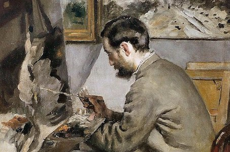
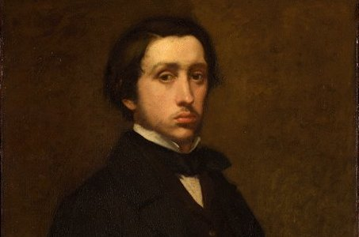
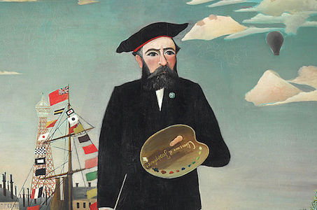
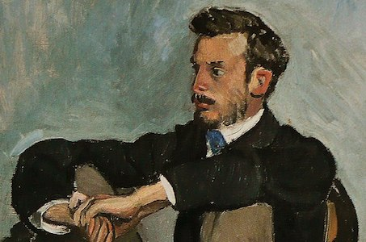
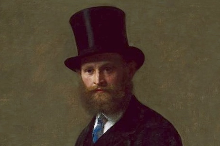
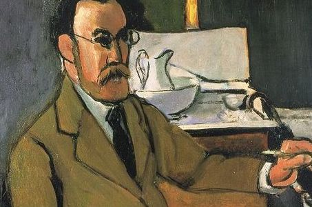

1, Frédéric Bazille

{kind=link}
Year: 1867
Medium: oil on canvas
Dimensions: 105 cm × 73.5 cm
Medium: oil on canvas
Dimensions: 105 cm × 73.5 cm
Born: 6 December 1841 / Died: 28 November 1870 (aged 28)

This portrait was painted by Pierre-Auguste Renoir. He was an Impressionist painter. Many of Bazille's major works are examples of figure painting in which he placed the subject figure within a landscape painted en plein air. [1]
2, Edgar Degas

{kind=link}
Year: 1855
Medium: oil on paper
Dimensions: 81.3 cm x 64.5 cm
Medium: oil on paper
Dimensions: 81.3 cm x 64.5 cm
Born: 19 July 1834 / Died: 27 September 1917 (aged 83)
Self portrait. He is famous for his paintings and sculptures: he was one of the Impressionism, and preferred to be called a realist. Over half of his works depict dancers.[2]
3, Henri Rousseau

{kind=link}
Year: 1890
Medium: oil on paper
Dimensions: 146 cm x113 cm
Medium: oil on paper
Dimensions: 146 cm x113 cm
Born: 21 May 1844 / Died: 2 September 1910 (aged 66)
Self portrait. He was the post-impressionist painter. He is also known as Le Douanier (the customs officer) after his place of employment. Ridiculed during his life, he came to be recognized as a self-taught genius whose works are of high artistic quality. He started painting seriously in his early forties; by age 49. [3]
4, Pierre-Auguste Renoir

{kind=link}
Year: 1867
Medium: oil on paper
Dimensions: 105 cm × 73.5 cm
Medium: oil on paper
Dimensions: 105 cm × 73.5 cm
Born: 25 February 1841 / Died: 3 December 1919 (aged 78)
This portrait was painted by Frédéric Bazille. He was a leading painter in the development of the Impressionist style. As a celebrator of beauty and especially feminine sensuality, it has been said that "Renoir is the final representative of a tradition which runs directly from Rubens to Watteau. [4]
5, Gustave Courbet

Year: 1843
Medium: oil on canvas
Dimensions: 89 cm × 99 cm
Medium: oil on canvas
Dimensions: 89 cm × 99 cm
Born: 10 June 1819 / Died: 31 December 1877 (aged 58)

↑Top
Self portrait (Title: The Desperate Man). Led the Realism movement in 19th-century French painting. Committed to painting only what he could see, he rejected academic convention and the Romanticism of the previous generation of visual artists. His independence set an example that was important to later artists, such as the Impressionists and the Cubists. [5]
6, Édouard Manet

{kind=link}
Year: 1867
Medium: oil on paper
Dimensions: 117.5 cm × 90 cm
Medium: oil on paper
Dimensions: 117.5 cm × 90 cm
Born: 23 January 1832 / Died: 30 April 1883 (aged 51)
This portrait painted by Fantin-Latour. At his father's suggestion, in 1848 he sailed on a training vessel to Rio de Janeiro. After he twice failed the examination to join the Navy,[5] his father relented to his wishes to pursue an art education. From 1850 to 1856, Manet studied under the academic painter Thomas Couture. In his spare time, Manet copied the Old Masters in the Louvre. [6]
7, Henri Matisse

{kind=link}
Year: 1918
Medium: oil on paper
Dimensions: 65 cm × 54 cm
Medium: oil on paper
Dimensions: 65 cm × 54 cm
Born: 31 December 1869 / Died: 3 November 1954 (aged 84)
Self-portrait. In 1948, Matisse began to prepare designs for the Chapelle du Rosaire de Vence, which allowed him to expand this technique within a truly decorative context. The experience of designing the chapel windows, chasubles, and tabernacle door—all planned using the cut-out method—had the effect of consolidating the medium as his primary focus. Finishing his last painting in 1951 (and final sculpture the year before). [7]
8, Claude Monet

Year: 1875
Medium: oil on canvas
Dimensions: 84 x 60.5 cm
Medium: oil on canvas
Dimensions: 84 x 60.5 cm
Born: 14 November 1840 / Died: 5 December 1926 (aged 86)
This portrait was painted by Pierre-Auguste Renoir. He was founder of impressionist painting who is seen as a key precursor to modernism. The family worked and built up the gardens, and Monet's fortunes began to change for the better as Durand-Ruel had increasing success in selling his paintings. The gardens were Monet's greatest source of inspiration for 40 years. In 1890, Monet purchased the house. [8]
Refference
[1] Wikipedia, (18 February 2022), [accessed 13 March, 2022]. What are Wikipedia? Available: https://en.wikipedia.org/wiki/Fr%C3%A9d%C3%A9ric_Bazille
[2] Wikipedia, (9 March 20222022), [accessed 14 March, 2022]. What are Wikipedia? Available: https://simple.wikipedia.org/wiki/Edgar_Degas
[3] Wikipedia, (11 February 2022), [accessed 14 March, 2022]. What are Wikipedia? Available: https://en.wikipedia.org/wiki/Henri_Rousseau
MoMA, (unnown), [accessed 14 March, 2022]. What are MoMA? Available: https://www.moma.org/artists/5056
[4] Wikipedia, (28 February 2022), [accessed 14 March, 2022]. What are Wikipedia? Available: https://en.wikipedia.org/wiki/Pierre-Auguste_Renoir
[5] Wikipedia, (23 March 2022), [accessed 4 April, 2022]. What are Wikipedia? Available: https://en.wikipedia.org/wiki/Gustave_Courbet
[6] Wikipedia, (2 April 2022), [accessed 4 April, 2022]. What are Wikipedia? Available: https://en.wikipedia.org/wiki/%C3%89douard_Manet
[7] Wikipedia, (28 March 2022), [accessed 4 April, 2022]. What are Wikipedia? Available: https://en.wikipedia.org/wiki/Henri_Matisse
[8] Wikipedia, (1 April 2022), [accessed 5 April, 2022]. What are Wikipedia? Available: https://en.wikipedia.org/wiki/Claude_Monete
Pola, (unnown), [accessed 5 April, 2022]. What are Pola? Available: https://www.polamuseum.or.jp/english/
[9] Musee Orangerie, (unnown), [accessed 5 April, 2022]. What are Musee Orangerie? Available: https://www.musee-orangerie.fr/en
[2] Wikipedia, (9 March 20222022), [accessed 14 March, 2022]. What are Wikipedia? Available: https://simple.wikipedia.org/wiki/Edgar_Degas
[3] Wikipedia, (11 February 2022), [accessed 14 March, 2022]. What are Wikipedia? Available: https://en.wikipedia.org/wiki/Henri_Rousseau
MoMA, (unnown), [accessed 14 March, 2022]. What are MoMA? Available: https://www.moma.org/artists/5056
[4] Wikipedia, (28 February 2022), [accessed 14 March, 2022]. What are Wikipedia? Available: https://en.wikipedia.org/wiki/Pierre-Auguste_Renoir
[5] Wikipedia, (23 March 2022), [accessed 4 April, 2022]. What are Wikipedia? Available: https://en.wikipedia.org/wiki/Gustave_Courbet
[6] Wikipedia, (2 April 2022), [accessed 4 April, 2022]. What are Wikipedia? Available: https://en.wikipedia.org/wiki/%C3%89douard_Manet
[7] Wikipedia, (28 March 2022), [accessed 4 April, 2022]. What are Wikipedia? Available: https://en.wikipedia.org/wiki/Henri_Matisse
[8] Wikipedia, (1 April 2022), [accessed 5 April, 2022]. What are Wikipedia? Available: https://en.wikipedia.org/wiki/Claude_Monete
Pola, (unnown), [accessed 5 April, 2022]. What are Pola? Available: https://www.polamuseum.or.jp/english/
[9] Musee Orangerie, (unnown), [accessed 5 April, 2022]. What are Musee Orangerie? Available: https://www.musee-orangerie.fr/en